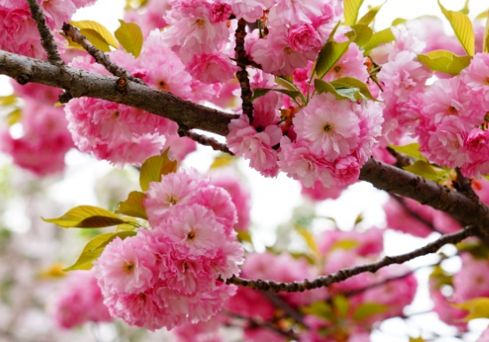

樱花并不是一种花，而是许多物种和品种的统称。
樱花并不是一种花，而是许多物种和品种的统称。在园艺界，樱花是蔷薇科李属樱亚属所有种的统称。 樱花品种相当繁多，数目有三百种以上，全世界共有野生樱花约150种，中国有50多种。全世界约40种樱花类植物野生种祖先中，原产于中国的有33种。

秦汉时期，宫廷皇族就已种植樱花，距今已有2000多年的栽培历史。汉唐时期，已普遍栽种在私家花园中，至盛唐时期，从宫苑廊庑到民舍田间，随处可见绚烂绽放的樱花，烘托出一个盛世华夏的伟岸身影。当时万国来朝，日本深慕中华文化之璀璨以及樱花的种植和鉴赏，樱花随着建筑、服饰、茶道、剑道等一并被日本朝拜者带回了东瀛。 野生的樱花在数百万年前诞生于喜马拉雅，但现代栽培的观赏樱花，则是多年前的日本人在日本选育出来的。据日本权威著作《樱大鉴》记载，樱花原产于喜马拉雅山脉。 唐朝时樱花已普遍出现在私家庭院。
白居易诗云：“亦知官舍非吾宅，且掘山樱满院栽，上佐近来多五考，少应四度见花开。”以及“小园新种红樱树，闲绕花枝便当游。”，诗中清楚的说明诗人从山野掘回野生的山樱花植于庭院观赏。 明代于若瀛的诗中提到樱花：“三月雨声细，樱花疑杏花”。 唐·孟诜所著《食疗本草》，对樱的定义为：“此乃樱非桃也，虽非桃类，以其形肖桃，故曰樱桃”。对山樱的释名为：“此樱桃俗名李桃，前樱桃名樱非桃也”。
宋代成都郡丞何耕对垂枝早樱的主要特征描述得非常真实，为后人留下宝贵的证据。他的《苦樱赋》中：“余承乏成都郡丞，官居舫斋之东，有樱树焉：本大实小，其熟猥多鲜红可爱。其苦不可食，虽鸟雀亦弃之”。这里他描述本实大小，而果苦不可食者决不是樱桃而必定是观赏樱花无疑。
本站文章均来自互联网，仅供学习参考，如有侵犯您的版权，请邮箱联系我们删除！
 上一篇
上一篇